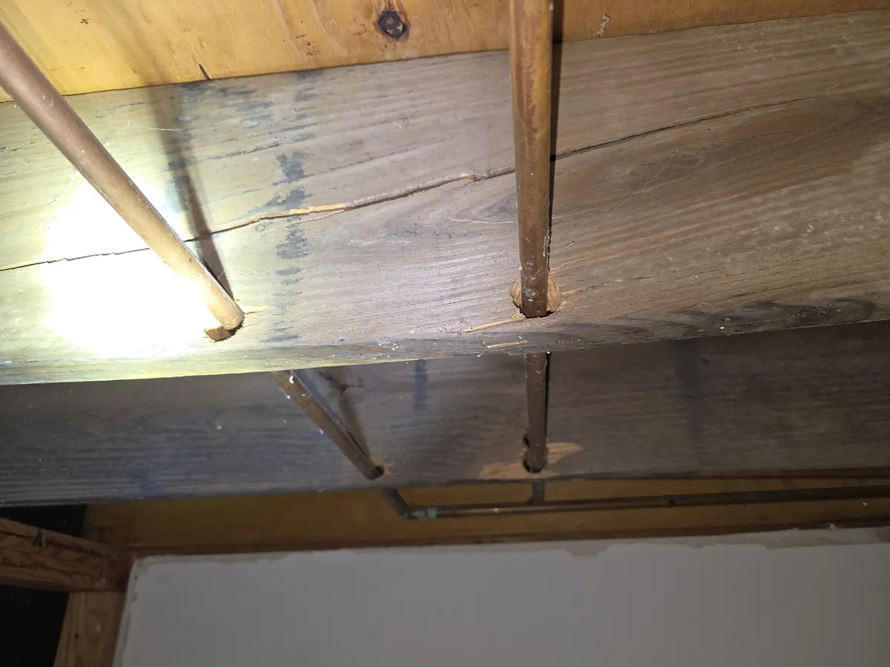

When plumbing needs to pass through a floor system, the quickest route can look like the best route. But drilling holes near the bottom edge of a floor joist is a shortcut that can create serious structural problems. It may seem minor in the moment, especially during a remodel or rough-in, but weakening a joist in the wrong place can lead to sagging floors, cracked finishes, and expensive repairs.

For homeowners, contractors, and remodelers, this is one of those issues that separates clean, professional plumbing work from the kind of sketchy fix that causes trouble later. Angle Stop Plumbing helps customers avoid these risky decisions by planning plumbing routes the right way from the start.
Why the Bottom Edge of a Floor Joist Matters
A floor joist is not equally strong throughout its entire height. Different parts of the joist handle different forces as the floor carries weight.
In simple terms:
- The top of the joist is under compression
- The bottom of the joist is under tension
- The middle area is generally the safer zone for approved holes, depending on joist type, size, span, and local code
That bottom edge is especially important because it helps the joist resist the pulling forces created by floor loads. When someone drills too close to the lower edge, they remove wood from a critical area that the joist depends on for strength.
That means a poorly placed plumbing hole is not just a code issue. It can be a structural integrity issue.
What Happens When Plumbing Is Run Through the Wrong Part of a Joist
Drilling near the bottom of a floor joist can weaken the framing member and reduce its ability to support the floor above. In many cases, the damage does not show up immediately. The plumbing may function fine, but the structure starts to tell a different story over time.
Common problems include:
- Sagging or bouncy floors
- Squeaks and movement underfoot
- Cracked drywall or ceiling finishes
- Tile or grout cracking
- Failed home inspections
- Costly structural reinforcement or repairs
This is why improper joist drilling is often called one of the most avoidable plumbing and framing mistakes in residential work.
Why Proper Plumbing Routing Matters
Good plumbing installation is not only about making the pipe fit. It is about making sure the installation protects the house long-term. When a plumber drills carelessly through framing just to save time, the homeowner often ends up paying for that shortcut later.
A professional approach may involve:
- Planning the pipe route before drilling
- Using approved boring locations in the joist
- Rerouting water or drain lines when the structure does not allow a safe pass-through
- Coordinating with framers, contractors, or engineers when needed
- Avoiding sketchy field modifications that compromise the home
This kind of planning helps prevent damage and keeps the plumbing system from becoming a hidden structural liability.
Signs of a Sketchy Plumbing Through-Joist Installation
Homeowners do not always see improper joist drilling during construction, but there are warning signs that something may have been done wrong.
Look out for:
- Holes drilled very close to the bottom edge of floor joists
- Oversized holes cut for drains or water lines
- Multiple holes grouped too close together
- Notches or cuts combined with bored holes
- Floors that feel soft, uneven, or unusually springy after plumbing work
- Visible “quick fix” alterations in crawl spaces or basements
If any of these conditions are present, it is worth having the work checked before a small issue becomes a major repair.
How Angle Stop Plumbing Helps Homeowners Avoid These Problems
Angle Stop Plumbing understands that plumbing should work with the structure of the home, not against it. Instead of taking shortcuts or forcing pipe through questionable locations, their approach focuses on safe routing, careful planning, and professional judgment.
That means Angle Stop Plumbing can help by:
- Identifying unsafe or poorly planned plumbing paths
- Avoiding risky drilling near the bottom edge of joists
- Recommending cleaner, code-conscious alternatives
- Catching sketchy plumbing work before it leads to structural damage
- Protecting both the plumbing system and the framing of the home
When a project calls for experience and common sense, that attention to detail matters. The difference between a reliable plumbing installation and a future repair bill often comes down to decisions made during rough-in.
Why Hiring the Right Plumber Protects More Than Your Pipes
A skilled plumber does more than connect fixtures and run lines. They understand how plumbing choices affect the rest of the home. That includes framing, subfloors, finished surfaces, and inspection outcomes.
Choosing a plumbing company that respects structural limits helps:
- Preserve the strength of floor framing
- Reduce the chance of future structural repairs
- Prevent code issues during remodels and inspections
- Improve long-term performance of both the plumbing and the home itself
That is why homeowners looking for quality workmanship should pay attention not just to whether plumbing is installed, but how it is installed.
Final Thoughts
Drilling holes near the bottom edge of a floor joist to run plumbing is a risky move that can lead to structural weakness, floor problems, and expensive repairs. It may seem like a fast solution, but it is often the kind of shortcut that creates bigger headaches later.
Angle Stop Plumbing helps homeowners avoid these sketchy scenarios by using smarter plumbing routes, respecting the structure of the home, and doing the job the right way the first time.
If you want plumbing work that protects your home instead of putting it at risk, working with professionals who understand both plumbing and structural limitations makes all the difference.